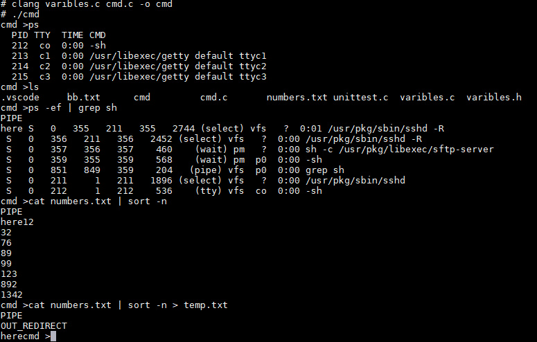

本篇主要介绍多管道实现，自己也写得不好，希望大家多多指点。
思路
我在这篇文章中较详细的讲解了管道的实现，但当时只涉及到一个管道，因此只需要关心对管道的read和write，并不需要关心read到什么地方去。
首先，我们在使用pipe创建管道后，需要fork一个进程，子进程用于向管道写，父进程用于向管道读（注意，顺序不能颠倒）。很有趣的一个问题是，当我们使用fork命令时，子父进程的执行顺序是不能确定的，那么是让父进程向管道读还是子进程向管道读呢？
我的理解是，由于父进程不能先于子进程结束，而如果管道中没有东西，从管道读的操作会被堵塞，可以利用这个性质让子进程先于父进程结束。具体做法就是：让父进程向管道读，子进程向管道写。由于“向管道写”操作总是先于“向管道读”操作，因此可以做到父进程结束前回收子进程的工作。
那么，我们怎么做到多管道进行操作呢？其实也不难，我们可以先把所需要的所有管道建立好，然后当子进程要进行execv操作之前，把它的输出fd指向下一个管道的输入，这样重复进行就能实现多个管道进行通讯了。
要注意的是，当进行到最后一个命令，这时候我们需要判断：若最后一个命令就是“|”，则我们需要将管道中的数据输出到屏幕即可；若最后一个命令时">",则需要将管道中的命令写入对应的文件中。
实现
总体来说对于管道的操作有三种情况：
- 最开始有“<”重定向符号，接着有多个管道。
- 一开始就是多个管道进行传输，最后输出到屏幕。
- 通过多个管道传输后，最后重定向到指定文件。
其实这三种情况都可以写成一个函数，因为只需要对第一个命令和最后一个命令进行特殊处理即可。由于笔者很蠢，最开始没想到第一种情况，因此后面只能用修改字符串的方法曲线救国了，代码很丑，将就看吧。 pipe_command：
/*take care of pipe*/
void pipe_command() {
/*pointerindex is the index of each Command*/
int i = 1, j = 0, pointerindex[20], commandnumber = CommandInfo.index;
int pipenumber = 0, pid, pipefd[20][2];
char** P_temp;
pointerindex[0] = 0; /*the first command location*/
/*get all command's index*/
while (i <= commandnumber) {
if (CommandInfo.argv[j] == NULL) {
pointerindex[i] = j + 1;
i++;
}
j++;
}
/*if the last command is > or >>*/
for (i = 0; i <= CommandInfo.index; i++) {
if (CommandInfo.type[i] == PIPE)
pipenumber++;
}
/*init the pipe*/
for (i = 0; i < 20; i++)
pipe(pipefd[i]);
i = 1;
if (fork() != 0) {
/*this is the father, need to read*/
dup2(pipefd[0][0], 0);
close(pipefd[0][1]);
P_temp = CommandInfo.argv + pointerindex[1];
/*fork a process*/
pid = fork();
if (pid != 0) {
/*this is the father,wait child return*/
waitpid(pid, NULL, 0);
close(pipefd[1][1]); /*no need to write*/
next_pipe(pipefd, pipenumber - 1, pointerindex);
} else {
/*read the result from pipe and write to the next pipe*/
dup2(pipefd[1][1], 1);
close(pipefd[1][0]); /*no need to read*/
Execvp(P_temp[0], P_temp);
}
} else {
/*this is the child, need to write*/
dup2(pipefd[0][1], 1);
close(pipefd[0][0]);
Execvp(CommandInfo.argv[0], CommandInfo.argv);
}
}
对于多管道进行循环操作：
/*special run for mult-pipes*/
void next_pipe(int pipefd[20][2], int pipenumber, int pointerindex[]) {
char** P_temp;
char buffer[MAXLINE];
int commandnumber = CommandInfo.index; /*get the all command number*/
int i = 1, pid, fd, run_index = 2; /*refer to the index of command to run*/
int flag = !(pipenumber + 1 == commandnumber);
int lastCommand = 0;
/*if only one pipe and no other command, print it*/
if (commandnumber == 1) {
read(pipefd[1][0], buffer, MAXLINE);
printf("%s", buffer);
return;
}
/*loop to connect the pipe*/
while (pipenumber--) {
pid = fork();
if (pid == 0) {
/*this is the child, to run the command*/
dup2(pipefd[i][0], 0); /*read data*/
close(pipefd[i][1]); /*no need to write*/
dup2(pipefd[i + 1][1], 1); /*write to the next pipe*/
/*get the command*/
P_temp = CommandInfo.argv + pointerindex[run_index];
Execvp(P_temp[0], P_temp);
} else {
/*wait child completes the command*/
waitpid(pid, NULL, 0);
i++; /*next pipe*/
run_index++; /*next command*/
}
}
/*if the last command is > or >>*/
if (flag) {
if (CommandInfo.override)
lastCommand = CommandInfo.type[commandnumber];
else
lastCommand = CommandInfo.type[commandnumber - 1];
/*if the command is >*/
if (lastCommand == OUT_REDIRECT) {
fd = open(CommandInfo.argv[pointerindex[commandnumber]],
O_WRONLY | O_CREAT | O_TRUNC, 0666);
} else { /*the command is >>*/
fd = open(CommandInfo.argv[pointerindex[commandnumber]],
O_RDWR | O_APPEND, 0666);
}
read(pipefd[i][0], buffer, MAXLINE); /*read from pipe*/
write(fd, buffer, strlen(buffer)); /*write into file*/
} else {
read(pipefd[i][0], buffer, MAXLINE); /*read from pipe*/
fprintf(stdout,"%s", buffer); /*print into screen*/
}
return;
}
对第一种情况进行曲线救国：
void EditInfo() {
int i, location;
CommandInfo.index--;
/* find the first command -- NULL */
for (i = 1; i < CommandInfo.argc; i++) {
if (CommandInfo.argv[i] == NULL) {
location = i;
break;
}
}
/* override the used command*/
for (i = location; i < CommandInfo.argc; i++) {
CommandInfo.argv[i] = CommandInfo.argv[i + 2];
}
CommandInfo.override = 1;
}
结果展示

总结
至此，终于完成了一个简单Shell的实现。虽然实现中碰到了不少的问题，最后的代码也不够优美，但这次实验让自己认识到了不少的问题。
- C语言使用还不够熟练，特别是对于UNIX的各种系统调用。
- 没有想清楚了再动笔，代码组织结构有问题，模块化不够。
- 多文件的协调和编译还不够熟练，编译顺序？makefile文件？还不太会用。
- 很多小bug没有意识到，比如说直接输入回车，子父进程的管理和回收等等。
- 单元测试还不太会。
ToDo
虽然把project要求完成了，但前前后后改得面目全非，导致自己都不愿意再看代码了。先挖个坑，等有时间了再重新理理思路，定个小目标，用两百行左右代码写好。
参考资料
- [Linux shell的实现][1]
- Operating System:Design and Implementation,Third Edition
- Computer Systems: A Programmer's Perspective, 3/E